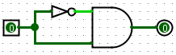
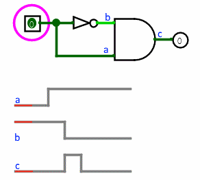
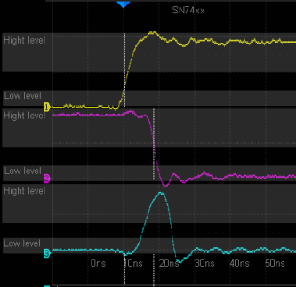

Gate delays
As an example of the level of sophistication of Logisim's algorithm, consider the following circuit.

This "obviously" always outputs 0. But NOT gates don't react instantaneously to their inputs in reality, and neither do they in Logisim. As a result, when this circuit's input changes from 0 to 1, the AND gate will briefly see two 1 inputs, and it will emit a 1 briefly. You won't see it on the screen. But the effect is observable when we use the AND gate's output as an input into the clock of a D flip-flop.

Poking the 0 input to become 1 leads to an instantaneous 1 going into the D flip-flop, and thus the flip-flop's value will toggle every time the circuit input goes from 0 to 1. The detailed sequence can also be observed thanks to the step-by-step mode of the simulation.
Every component has a delay associated with it. More sophisticated components built into Logisim tend to have larger delays, but these delays are somewhat arbitrary and may not reflect reality.

Logisim world

Real world
From a technical point of view, it is relatively easy to deal with this level of sophistication in a single circuit. Dealing with gate delays well across subcircuits, though, is a bit more complex; Logisim does attempt to address this correctly by placing all primitive component's propagation values into a single schedule regardless of the subcircuit in which the component lies.
Via the Project Options window's Simulation tab, you can configure Logisim to add a random, occasional delay to a component's propagation. This is intended to simulate the unevenness of real circuits. In particular, an R-S latch built using two NOR gates will oscillate without this randomness, as both gates will process their inputs in lockstep. This randomness is disabled by default.
Note that I'm stopping short of saying that Logisim always addresses gate delays well. But at least it tries.
Next: Oscillation errors.